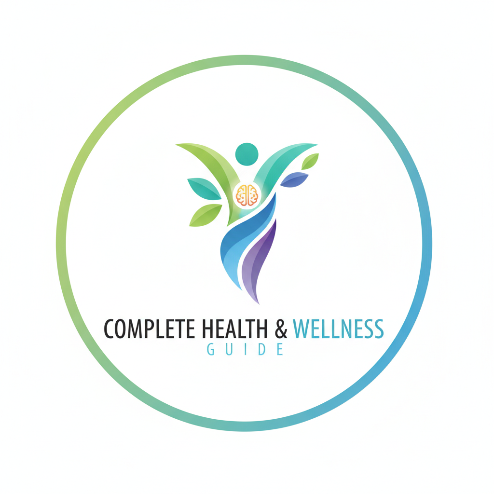
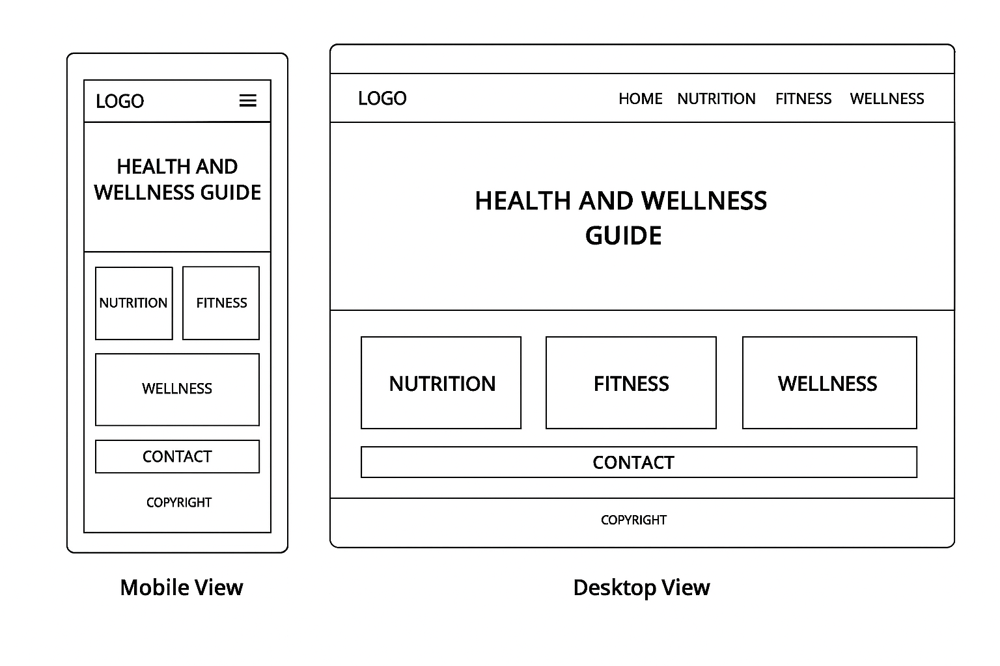

Site Name
Complete Health and Wellness Guide
This site name represents a comprehensive resource covering all aspects of health and wellness, including nutrition, fitness, and mental health. It conveys authority and clarity for users seeking reliable health guidance.
Domain: https://pzimondi.github.io/wdd131/completewellnessguide.html
Site Purpose
The website provides a central hub for healthy living, including educational content, interactive tools, and resources to support physical fitness, proper nutrition, and mental well-being. Users can access workout routines, meal plans, mindfulness exercises, and submit inquiries through a contact form.
Scenarios
- What simple home workout routines can I follow to improve my fitness?
- How can I create a weekly meal plan that meets my nutritional requirements?
Color Schema
Primary Color: #3CB371 (Medium Sea Green) – used for headings, buttons, navigation highlights, and accents.
Secondary Color: #F5F5DC (Beige) – used for backgrounds, content sections, and subtle highlights.
Typography
Roboto – used for body text and paragraph content.
Montserrat – used for headings, section titles, and navigation items.
Wireframe
Home Page Layout:
- Header with site logo and navigation menu (Home, Nutrition, Fitness, Wellness, Contact)
- Main Banner: Introduction to health and wellness with inspirational message
- Feature Sections: Nutrition tips, fitness routines, mental wellness resources
- Interactive Tools: Exercise tracker, nutrition calculator, and preference storage using localStorage
- Testimonials or success stories
- Contact Form: For questions or feedback submission
- Footer: References, copyright, and links
Wireframe sketches for mobile and desktop views:
